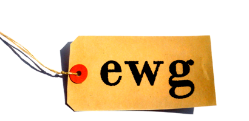

Introduction to the Eiffel Wrapper Generator


Introduction to the Eiffel Wrapper Generator |
|

EWG (Eiffel Wrapper Generator) is a tool that generates Eiffel wrapper classes for C libraries. It can be used to create libraries that bridge the gap between Eiffel and C. It aims to work for arbitrary ANSI C and with all common Eiffel compilers.
EWG is ideal for creating cross-platform, cross-eiffel-compiler and cross-c-compiler C library wrappers.
If you have questions that are not covered in this document, please email me at aleitner@raboof.at.
Generates wrappers for:
The GTK 2 example is actually on the edge of becoming usable for application developers.
|
Copyright © 2004-2005, Andreas Leitner mailto:aleitner@raboof.at http://ewg.sourceforge.net Last Updated: 8 March 2005 |
  |